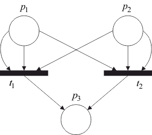

Наглядным представлением сети Петри является ее графическое представление, которое представляет собой двудольный ориентированный мультиграф.
Граф сети Петри обладает двумя типами узлов: кружок, представляющий позицию сети Петри, и планка, представляющая переход сети Петри. Ориентированные дуги этого графа (стрелки) соединяют переход с его входными и выходными позициями. При этом дуги направлены от входных позиций к переходу и от перехода к выходным позициям. Кратным входным и выходным позициям перехода соответствуют кратные входные и выходные дуги.
Граф сети Петри рассмотренного выше примера приведен на рисунке 4.1.

Рис. 4.1 – Граф сети Петри
В графе сети Петри невозможны дуги между двумя позициями и между двумя переходами.